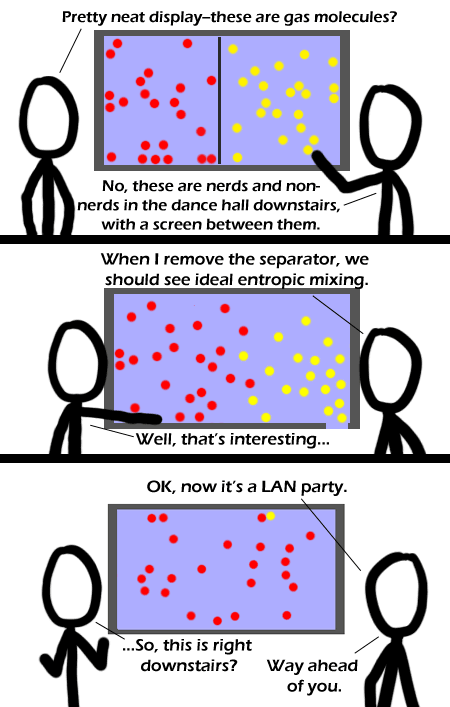

Comic JK 340
When I Feel Like It
⇤
<
?
>
⇥

⇤
<
?
>
⇥
Forum
.
RSS
.
Digg
.
Facebook
.
Reddit
.
Twitter
.
Stumbleupon
Enter your thoughts on number 340 here. Please, no no no no cooperation. Profoundly racist! And thus, the nerds converted the non-nerds to their cause, for they had wifi access and network games. >It looks more like the nerds wiped out the non-nerds or chased them away. >>Did the numbers increase? EDIT (23n + 22nn) -> (23n + 1nn)the recruitment was not successful, but what was going through the mind of the lone non nerd in the last frame? >>>>>>>( probably: "so, er... can you fix my computer...?" ) >>>>>>>( PS: notice the second frame - the room door is visible... ) >>>It looks like a male non-nerd managed to seduce the only hot female nerd... >>>>That's an oddly gender-specific way of seeing it >>>>>Hot male nerds are a myth. >>>>>>Clearly someone doesn't know the author of this comic >>>>>>>or me :D ( "hey baby, come and talk to me, I know all about the Intel 286 memory access bug :D" ) >>>>>>>>I'm only interested in the 6800 HCF instruction ;) >>>>>>>>>Before I read the last two lines I thought I'd be a sexy nerd. Now I know I'm only sexy. >>>>>>>you mean you're not interested in the 6800 index register ? :| >>>>>>>>>What happens if you leave a male nerd out in the sun too long? He'll be hot but- but!? >>>>>>>perhaps it's best we not ask for further details ? :| before reading the text, i thought that the nerds were eating the non-nerds >Perhaps someone's trying out nerdy pick-up lines. From the proximity of the two dots, it looks like they worked. FFS PEOPLE! IN THE 2ND PANEL THE YELLOWS ARE LEAVING THROUGH THE DOOR ON THE BOTTOM RIGHT!!! > THE READERSHIP OF THIS PARTICULARLY NERDY COMIC HAD OBVIOUSLY FAILED TO GRASP SUCH A SUBTLE AND NOT-AT-ALL-OBVIOUS INSIGHT, AS OPPOSED TO SEEING IT AND THEN PROCEEDING TO PLAY AROUND WITH THE JOKE. YOU HAVE OUR THANKS FOR POINTING IT OUT TO US, AND EVEN GOING SO FAR AS TO PUT IT IN CAPITALS SO WE COULDN'T MISS IT - YOU ARE CLEARLY A KINDLY SOUL WHO IS TOO GOOD FOR THIS IMPERFECT WORLD.